地政学
ピッツバーグは内陸河川交通とアパラチアの入口に立つ都市です。かつて鉄鋼は軍需、鉄道、建設を支え、今は大学、医療、技術が地域再編を担います。州内政治では東西都市圏と農村部をつなぎ、脱工業化の記憶も残ります。

🇺🇸 アメリカ合衆国 / 北米 / World City Atlas
三つの川が合流する丘陵都市です。鉄鋼の記憶、医療と大学研究、橋とスポーツ文化、労働者地区の生活、住宅格差を通じて、ポスト工業都市の変化を読む都市です。
都市の骨格
ピッツバーグはアレゲニー川とモノンガヒラ川が合わさり、オハイオ川へ流れ出す地点に広がります。谷底の都心、丘上の住宅地、川沿いの工場跡、大学と病院の集積が、産業都市から研究都市への変化を見せています。
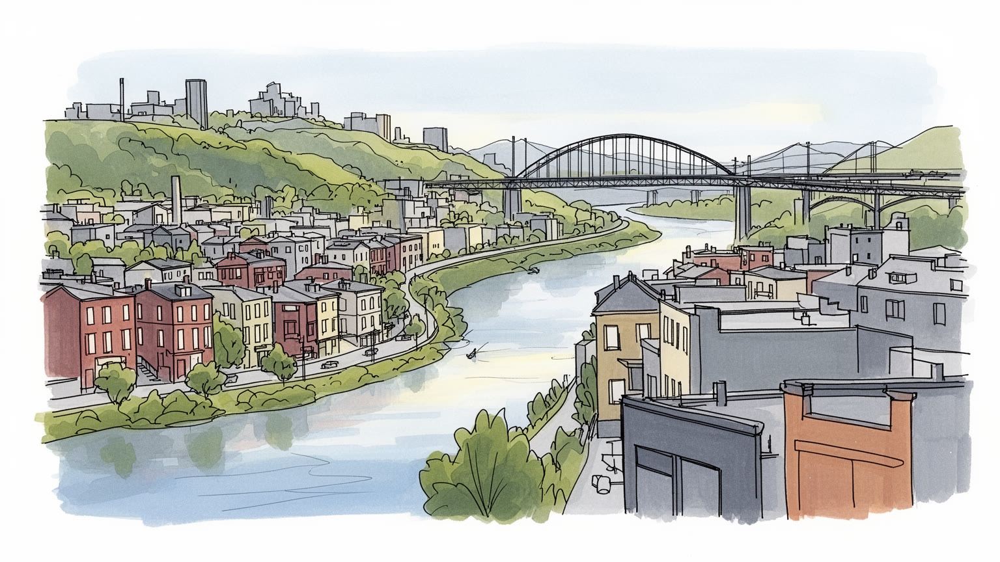
ピッツバーグは内陸河川交通とアパラチアの入口に立つ都市です。かつて鉄鋼は軍需、鉄道、建設を支え、今は大学、医療、技術が地域再編を担います。州内政治では東西都市圏と農村部をつなぎ、脱工業化の記憶も残ります。
製鉄の高炉は減りましたが、医療、大学、ロボティクス、金融、エネルギー関連サービスが雇用を作ります。研究職と医療職の増加は新しい所得を生む一方、介護、清掃、飲食、配送、建設の現場労働が毎日を支えています。
東欧、アイルランド、イタリア、アフリカ系住民の教会、祭り、食文化が地区の記憶を作ります。カトリック教会、正教会、シナゴーグ、黒人教会、大学周辺の多宗教施設が、移民史と労働者文化を今の生活へつないでいます。
球場、川辺、アンディ・ウォーホル美術館、丘上展望は訪問者を集めますが、住民には坂道、車依存、公共交通、住宅更新、洪水、寒い冬、教育格差が日常の条件です。観光の魅力は、古い地区の生活を守れるかで変わります。
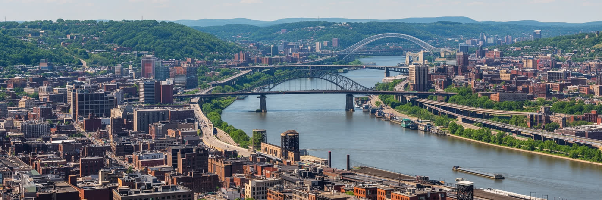
ピッツバーグの地図は、アレゲニー川とモノンガヒラ川が合わさり、オハイオ川へ変わる一点から読み始めると分かりやすいです。都心のゴールデン・トライアングルは谷底の狭い平地に置かれ、周囲には急な斜面と尾根が迫ります。川は工場、鉄道、倉庫、船運を集め、橋は分断された地区を結ぶ生活路になりました。丘上の住宅地から川辺の工場跡までの高低差は、景観だけでなく、通勤、雪の日の移動、洪水リスク、土地価格にも影響します。川沿いの再開発は公園や住宅を増やしましたが、かつての産業汚染、低地の浸水、交通の不便さも残ります。ピッツバーグを見るときは、中心部の摩天楼だけでなく、谷を越える橋、斜面の階段、丘上の家並み、河岸の鉄道跡を一体で読む必要があります。地形は都市の美しい背景ではなく、地区のつながり方と不平等を決める基礎です。川の合流点が都市を生み、同じ川が更新の速度と危険を測る物差しにもなっています。さらに水辺の公園やトレイルは、健康的な都市像を示す一方、低地に住む人ほど浸水や保険料の変化を受けやすい現実も映します。地形を読むことは、観光の眺めと生活の負担を同時に見ることです。丘の上から見る美しさと、谷底で暮らす不便さを切り離さない視点が、この街を立体的にします。雨量や雪解けの季節も、川沿いの使い方を変えます。
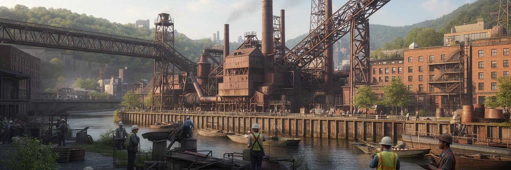
ピッツバーグは長く鉄鋼都市として語られてきました。石炭、鉄鉱石、河川、鉄道、移民労働が結びつき、高炉と圧延工場は橋、線路、ビル、軍需を支える素材を作りました。煙と粉じんは都市の空を暗くし、賃金は家族を支え、同時に過酷な労働、労災、企業城下町の依存も生みました。脱工業化で多くの工場が閉じると、雇用、組合、商店街、学校、家族の時間割が一気に変わりました。現在の再生物語は、研究都市への転換だけを強調しがちですが、失われた職と誇り、空き地になった工場跡、労働者地区の高齢化を無視できません。鉄鋼の記憶は博物館の展示ではなく、橋の数、チーム名、教会の祭り、川沿いの土壌、祖父母の仕事の話として残ります。ピッツバーグの強さを理解するには、産業の成功と衰退を同じ都市史として扱い、誰が新しい経済へ移れたのかを問う必要があります。高炉が消えた後も、鉄の都市で働いた人々の制度と感情は、現在のまちづくりを静かに形作っています。製鉄所の跡地が商業地や住宅へ変わると、環境改善の成果と記憶の消失が同時に起きます。過去を誇るだけでなく、汚染、労働災害、人種差別を含めて語ることが、都市の成熟につながります。鉄鋼は終わった産業ではなく、住民が自分の街をどう説明するかを決める言語として残っています。その言語は今の雇用論にも響きます。
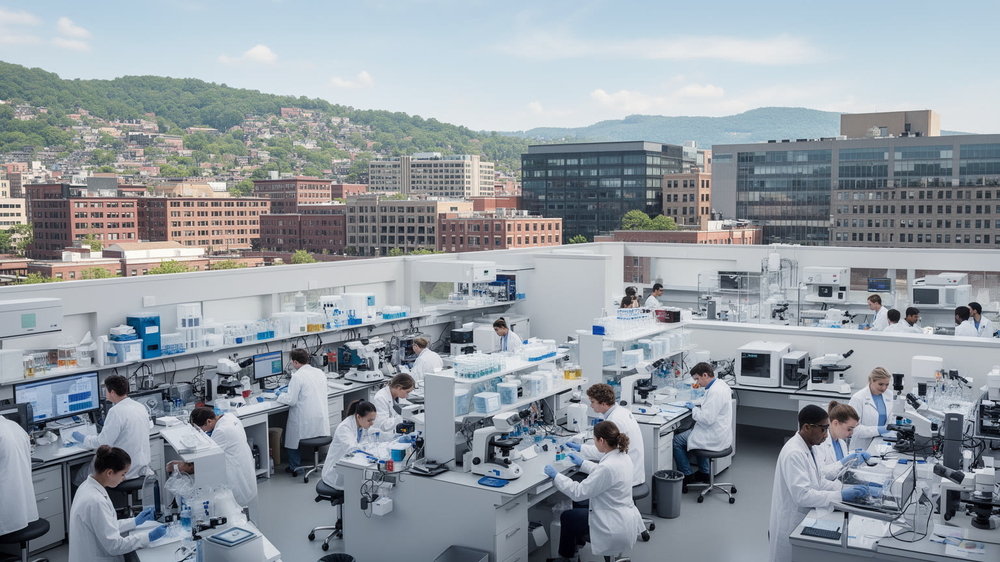
今日のピッツバーグ経済を支える大きな柱は、医療、大学、研究開発です。大規模な病院群は地域医療だけでなく雇用、臨床研究、建設投資、周辺商業を引っ張ります。カーネギーメロン大学やピッツバーグ大学の存在は、ロボティクス、人工知能、自動運転、生命科学、材料研究の企業を呼び込み、鉄鋼都市のイメージを更新してきました。ただし、研究職や医師の成長が都市全体の安定を自動的に保証するわけではありません。病院を支える看護、介護、清掃、食事、警備、事務の仕事は賃金や勤務時間の問題を抱えます。大学周辺の投資は住宅価格を押し上げ、学生や専門職には便利な地区が、長く住んだ住民には負担になることもあります。技術都市としての成功を評価するには、特許や研究費だけでなく、医療へ届く人、働く人の待遇、地域学校への波及、交通の接続を見る必要があります。ピッツバーグの新産業は、古い工場跡と病院街を結びながら、都市の格差も映し出しています。病院や大学は地域最大級の雇用主であるため、税、土地利用、労使関係、公共交通にも大きな影響を持ちます。研究成果が周辺地区の健康や雇用を改善できるかが、知識経済の正当性を左右します。技術の集積が強いほど、技能を学び直す場や地域企業への橋渡しが重要になります。成長の質は、患者と労働者の経験にも表れます。
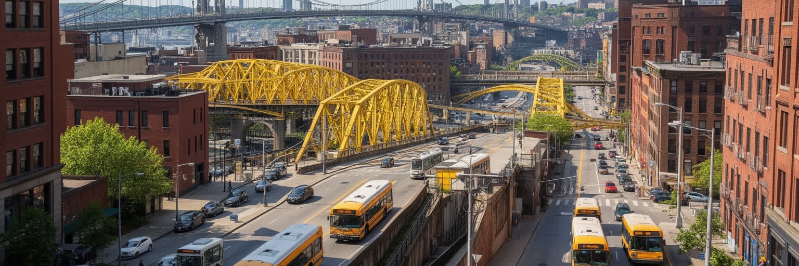
ピッツバーグは橋の多い都市として知られますが、その数は観光的な個性である前に、地形を乗り越える生活の必要から生まれました。川と谷、鉄道線路、急斜面が地区を細かく分けるため、橋、トンネル、階段、坂道、バス路線は住民の行動範囲を決めます。中心部へ向かう道路は限られ、ラッシュ時の渋滞や冬の路面は通勤を難しくします。ライトレールやバスは重要ですが、郊外化が進んだ地域では車がないと仕事、病院、買い物へ届きにくい場所もあります。橋が美しいほど、橋に依存する暮らしの弱さも見えます。修繕の遅れ、老朽化、洪水、事故は一つのルートを塞ぐだけで、地区の孤立や通勤の遅れにつながります。公共交通の整備は、低所得者、高齢者、学生、障害者にとって都市へのアクセスそのものです。ピッツバーグの交通を読むことは、黄色い橋の景観を楽しむだけでなく、誰がどの坂を上り、どの乗り換えを待ち、どの仕事へ通えるのかを読むことです。移動の公平性は、この丘陵都市で生活の公平性に直結しています。自転車道や川沿いトレイルは新しい都市像を示しますが、坂と冬の気候は利用者を選びます。高齢者の通院、夜勤者の帰宅、学生の移動まで含めて考えると、交通は福祉政策でもあります。橋の維持管理は地味ですが、都市の信頼を支える公共投資です。毎日の安心はそこから生まれます。
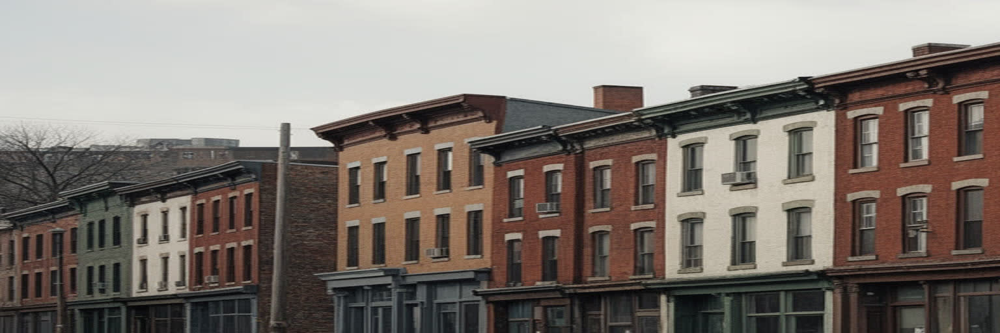
ピッツバーグの地区は、産業労働と移民の記憶を濃く残しています。東欧、イタリア、アイルランド、ドイツ、アフリカ系住民が、教会、社交クラブ、組合、食料品店、学校を通じて生活圏を作りました。工場のシフトに合わせて家族の食事、礼拝、スポーツ、商店街の時間が動き、同じ職場の危険や賃金交渉が近所の話題になりました。脱工業化はその関係を弱めましたが、地区ごとの誇りや祭り、フットボールへの熱、古い長屋や傾斜地の家並みは残っています。一方で、空き家、人口減少、薬物依存、学校の不安、若者の流出も多くの地区で現実です。新しい投資が入る場所では、古い住民が家賃や税負担で押し出される心配もあります。労働者地区を過去の郷愁として見るだけでは、現在の生活条件を読み落とします。医療や大学の経済へ移れた人と、低賃金サービス業や不安定な仕事に残る人の差が広がる中で、地区のつながりは支えにも重荷にもなります。ピッツバーグの地域性は、産業史と生活の粘り強さが交差する場所にあります。教会の地下食堂、消防団、地域新聞、小さなバーは、制度化されにくい福祉の網でもあります。人口が減った後も、こうした場所が残るかどうかが、地区の回復力を大きく左右します。近所の記憶は観光資源である前に、困った時に誰へ声をかけるかを教える社会的な地図です。
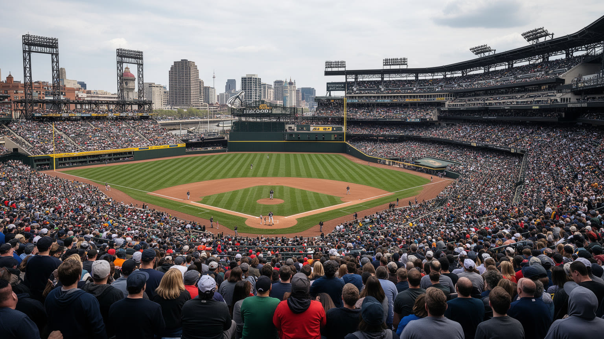
ピッツバーグの文化を語るとき、スポーツは娯楽以上の意味を持ちます。アメリカンフットボール、野球、アイスホッケーのチームカラーは都市の共通語になり、鉄鋼労働者の誇り、家族の週末、バーの会話、地域の寄付活動を結びます。球場やアリーナは川辺の再開発とも重なり、試合の日には橋と通りが一つの祭りの動線になります。文化施設ではアンディ・ウォーホル美術館、カーネギー系の博物館、交響楽、劇場、大学の公演が都市の別の顔を作ります。移民地区の食、黒人音楽の歴史、ポーランド系やスロバキア系の教会行事も、公式な文化施設だけでは見えない厚みです。ただし、文化の活性化は中心部や大学周辺に偏りやすく、郊外や衰退した地区の若者にはアクセスしにくいことがあります。スポーツと芸術は都市の誇りを作りますが、同時にチケット価格、交通、治安、学校教育との関係も問われます。ピッツバーグの文化は、派手な消費ではなく、働く人の帰属意識、地区の記憶、大学都市の創造性が混ざり合うところに特徴があります。川を背景にした球場の景色は美しいですが、文化の本体は、試合後に家族が集まる食堂や、地域の子どもが楽器やスポーツへ触れる場所にもあります。参加できる文化かどうかが、都市の誇りを持続させます。都市の物語は勝敗だけでなく、敗れた季節も共有する共同性から作られます。
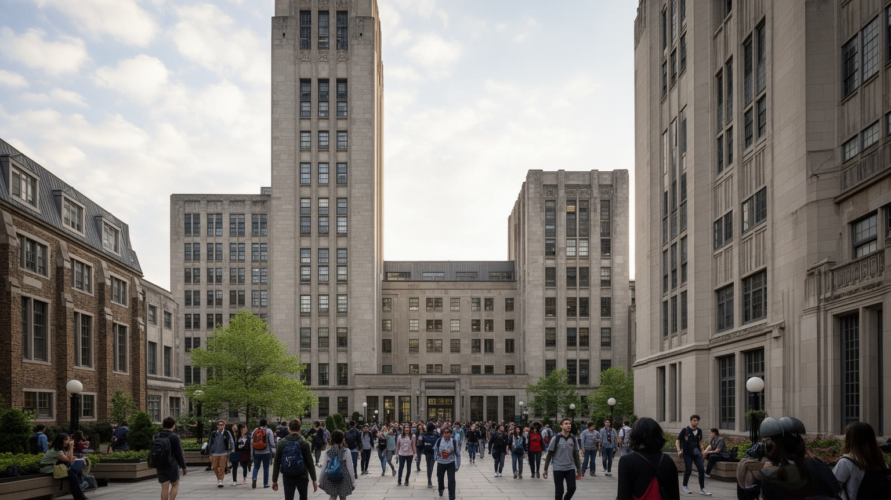
ピッツバーグの再生を語るうえで、大学と教育機関の役割は欠かせません。カーネギーメロン大学は計算機科学、ロボティクス、芸術と技術の融合で世界的な存在感を持ち、ピッツバーグ大学は医学、公共政策、人文社会科学を通じて都市と結びつきます。オークランド地区には学生、研究者、病院職員、飲食店、図書館、美術館が集まり、旧工業都市の中に知識産業の中心が形成されています。しかし、大学都市化は歓迎だけではありません。学生向け住宅や研究施設の拡張は、周辺の家賃、交通、駐車、地域商店の性格を変えます。地元の子どもが高度な教育機会へ届くか、研究成果が地域の学校や中小企業へ広がるかも重要です。大学が世界から人材を呼び込むほど、移民学生や研究者の生活支援、地域住民との関係、公共空間の使い方が問われます。教育と研究は都市の未来を開く力ですが、都市を実験場としてだけ扱えば反発も生みます。ピッツバーグの大学は、産業転換の象徴であると同時に、知識経済が地域社会とどう共存するかを試される存在です。奨学金、地域学校との連携、起業支援、公共図書館との協働が弱ければ、大学の豊かさはキャンパスの内側で止まります。学びの都市であるほど、学びへ届く経路の公平さが問われます。研究都市の評価は、外から来る才能だけでなく、地元の若者が残れる理由を増やせるかにもかかっています。
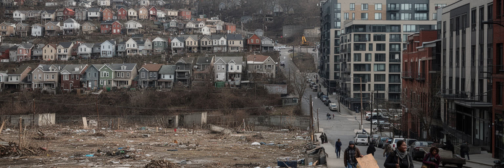
ピッツバーグは米国の大都市に比べて住宅費が抑えられる都市として語られることがあります。しかし平均的な安さは、地区ごとの差を隠します。大学や病院に近い地区では家賃と住宅価格が上がり、古くからの住民や低所得世帯が税負担や修繕費に苦しむことがあります。別の地区では空き家、老朽化、鉛、水道管、断熱不足、学校の弱さが生活の質を下げます。丘陵地の地形は、徒歩移動や除雪を難しくし、高齢者や障害者に負担をかけます。黒人住民が多い地区では、住宅差別、資産形成の遅れ、公共投資の偏りが長く影響してきました。再開発は安全で魅力的な住宅を増やす一方、誰のための更新なのかを常に問われます。住宅政策は、空き家の再利用、手頃な賃貸、公共交通、学校、医療、洪水対策を一体で扱う必要があります。安い都市という評価だけでは、住み続けるための修繕費、移動、健康、教育の負担は見えません。ピッツバーグの住宅を読むことは、ポスト工業都市の再生がどの地区へ届き、どこに届かないのかを読むことです。古い家を直して住み続けるには、所得だけでなく信用、保険、業者、行政手続きへのアクセスも必要です。住宅の安さを都市の魅力にするなら、修繕と公共サービスを支える仕組みも同時に整える必要があります。家は資産である前に、冬を越し、学校へ通い、近所と関係を結ぶための基盤です。
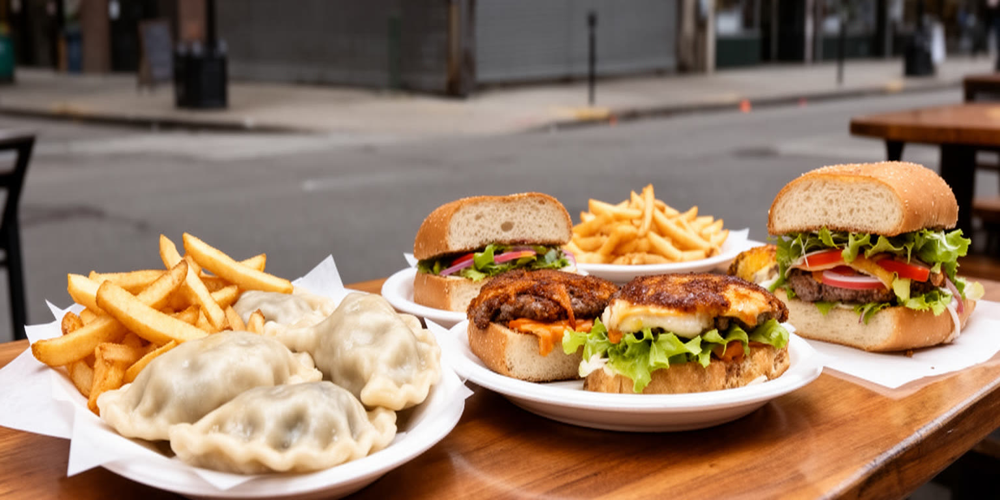
ピッツバーグの日常は、川を渡る通勤、坂道の住宅地、近所のバー、教会の行事、学校スポーツ、寒い日のスープ、サンドイッチ、民族系の菓子や惣菜に表れます。ストリップ・ディストリクトの市場や食料品店は、工業物流の名残と移民食文化を同時に見せます。ポーランド系、イタリア系、東欧系、アフリカ系、近年のアジア系やラテン系の食は、都市の移民史を口にできる形で残します。観光客には名物料理やビール醸造所が目立ちますが、住民にとって重要なのは、近くに買い物できる店があるか、車がなくても病院や学校へ行けるか、冬に安全に歩けるかです。食の豊かさは、低賃金の調理、配送、清掃、小売労働にも支えられます。郊外化で食品店が遠くなった地区では、健康と交通の問題が重なります。日常を読むと、ピッツバーグは大きな産業転換だけでなく、小さな店、台所、礼拝後の食事、試合の日の家族時間で続く都市だと分かります。観光の楽しさと住民の生活条件を同じ地図に置くことが、この街の読み方を深めます。食卓は世代間の記憶を運びますが、同時に物価、賃金、交通の影響を受けます。近所で食べ、買い、会話できる場所が残るほど、都市の変化は生活の中へ穏やかに受け止められます。日常の店は小さく見えて、孤立を防ぎ、地区の変化を住民が話し合う場所にもなります。そこに街の体温があります。
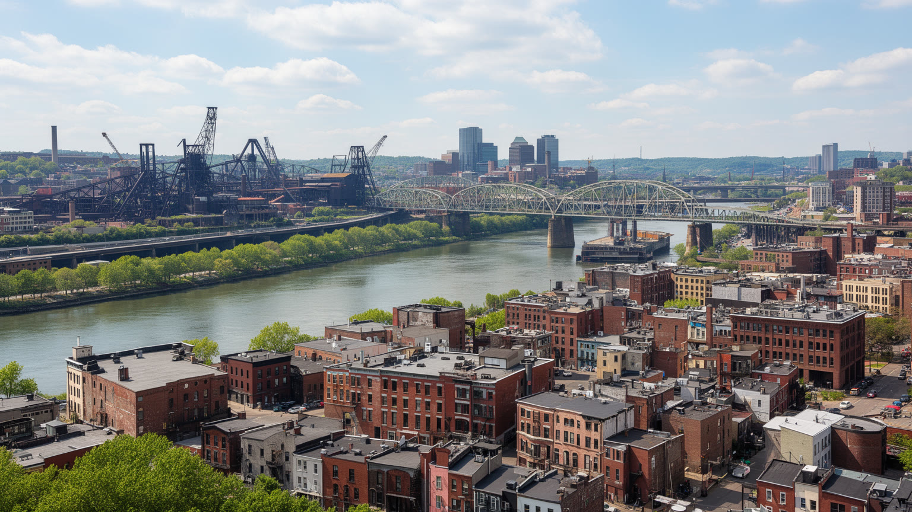
ピッツバーグは、世界の巨大首都とは違う形で重要な都市です。三つの川と丘陵地形、鉄鋼産業の記憶、組合と移民地区、大学と病院、スポーツ文化、住宅格差が一つの都市圏に重なり、工業化と脱工業化の長い時間を見せています。ここでは、都市再生は単なる成功物語ではありません。工場跡が研究施設や住宅へ変わる一方で、失業、空き家、黒人地区への投資不足、低賃金の医療補助職、交通の不便さも残ります。新しい技術産業は未来を開きますが、古い労働者地区の記憶を置き去りにすれば、都市の信頼は弱まります。ピッツバーグを読むことは、産業都市が環境を改善し、知識経済へ移り、文化と観光を育てる過程で、誰が利益を得て、誰が取り残されるかを読むことです。橋と川の美しい景観の背後には、移動の制約、洪水、住宅、教育、医療へのアクセスが隠れています。だからこの都市の価値は、規模の大きさよりも、産業転換の経験をどれだけ公平な生活へ変えられるかにあります。ピッツバーグは過去の鉄の都市であり、同時にポスト工業都市の未来を試す実験場でもあります。世界中の中規模工業都市が同じ課題に向き合うなかで、この街の経験は、環境改善、文化再生、大学主導の成長、住宅格差を同時に考える手がかりになります。成功と痛みを一緒に読むことで、都市の未来像が具体的になります。